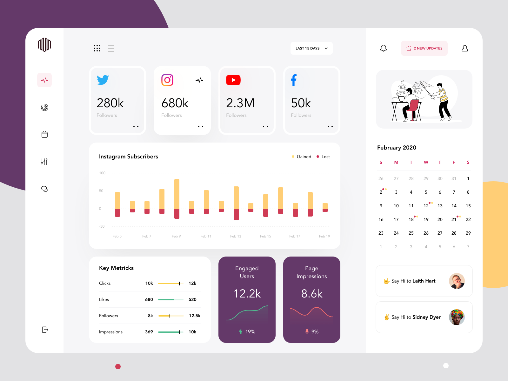

Data Analyst | Web Developer | Innovator
Bio: Experienced Data Analyst and Web Developer with over 5 years of expertise in analyzing complex datasets and creating responsive, visually appealing websites. Proficient in data analysis tools such as Python, R, and SQL, and skilled in front-end development with HTML, CSS, and JavaScript, including frameworks like React.js. Passionate innovator dedicated to leveraging technology to drive insights and develop user-friendly digital solutions.
Social Media Reputation Monitoring involves tracking and analyzing mentions of a brand, individual, or product across various social media platforms. This process helps in understanding public perception, identifying potential issues early, and managing the overall online reputation. It includes monitoring social media conversations, reviews, comments, and other user-generated content to gauge sentiment, measure engagement, and respond promptly to both positive and negative feedback. Effective reputation monitoring enables brands to build trust, maintain a positive image, and engage proactively with their audience, ultimately contributing to long-term success and credibility.
A Social Media Dashboard in web development is a centralized interface that allows users to manage, monitor, and analyze their social media activities across multiple platforms. This dashboard integrates data from various social media channels such as Facebook, Twitter, Instagram, LinkedIn, and others, providing a comprehensive overview of key metrics and performance indicators.
Email: syed.aejaz.ahmed2006@gmail.com
Phone: +1 234 567 890